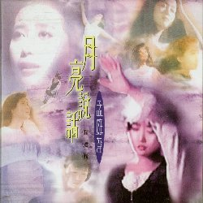
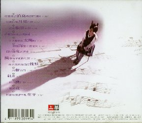

月亮説話（精選輯）
| １９９６年３月 | 月亮説話（精選輯） | ＷＣＤ－２１４５
|
|---|
| 
| 上華（WHAT'S MUSIC INTERNATIONAL INCORPORATED.）
|
- 校園裡的消息傳得特別快
4'25"
- （イ尓）看（イ尓）看月亮的（月僉）
4'37"
- 誰的眼涙在飛
5'16"
- 冬季到台北来看雨
4'58"
- 不下雨就出太陽（口巴）
3'56"
- （イ尓）聴海是不是在笑
5'50"
- 日以継夜的想（イ尓）
4'30"
- 風中有（几／木）雨做的雲
4'20"
- （イ尓）究竟有幾個好妹妹
5'15"
- 無聲的雨
4'35"
- 紅雨
6'23"
- 把他換作（イ尓）
4'41"
- 紫浣花
4'14"
- 其實我還是有些在乎
3'52"
|
| 
|
このアルバムもタイトルに「精選」とついているだけ有って、
悪く言えば、「他のアルバムの寄せ集め」と言えるようです。
歌詞カードもＭＴＶの映像や子供の頃の写真なども使ってあります。
|